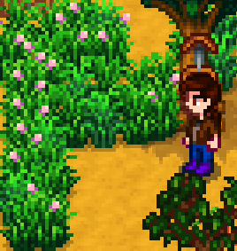
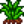

Grass
| Grass | |
|  | |
| Information | |
| Seed |  Grass Starter |
| Growth Time | Varies |
| Season | |
Grass is a naturally-occurring dynamic resource on the player's farm. Many unconfined fields of grass can be found there at the start of the game. Each day, it is likely that existing grass will expand and grow into adjacent unoccupied tiles. And occasionally, grass spawns randomly on any unoccupied tile on the farm. The player can choose to plant a new tile with Grass Starter also, creating a fully grown patch of new grass. Grass continues to sprout and grow throughout the spring, summer, and fall seasons. In winter, it goes dormant until the next spring.
Grass can be cut using a scythe, sword, or dagger. If the player has built a Silo, each patch of grass cut with the basic Scythe has a 50% chance of producing Hay, which is automatically added to the contents of the silo. With a Golden Scythe, there's a 75% chance, and with an Iridium Scythe, there's a 100% chance. During winter, hay chances for all scythes are reduced by 67%.[1] Once all the farm's silos are full, no more hay is produced or stored until there is available room. Cutting grass with a sword or dagger does not produce hay at any time.
It is recommended that enough hay be stored before winter to feed the farm's animals for the entire 28-day season, since cutting grass in winter produces less hay than in the growing seasons. If cutting grass is not enough, hay can be purchased at Marnie's Ranch for  50g each. Marnie occasionally sends a gift of 30 hay in the mail, at any friendship level greater than 0 points.
50g each. Marnie occasionally sends a gift of 30 hay in the mail, at any friendship level greater than 0 points.
Blue Grass
This page or section contains unmarked spoilers from update 1.6 of Stardew Valley. Players may want to avoid or be cautious toward reading this article/section. |
Blue Grass appears naturally on Meadowlands farms. A recipe for Blue Grass Starter can be purchased in Qi's Walnut Room for  40, which allows Blue Grass to be placed on other farm types.
40, which allows Blue Grass to be placed on other farm types.
Animals eating Blue Grass gain twice as much friendship as from eating normal Grass (16 instead of 8).[2] If successfully cut with a Scythe, Blue Grass will produce two pieces of hay, instead of the usual one.[1]
Animals eat half the amount of tufts of Blue Grass compared to normal Grass (Coop animals 1 instead of 2 tufts, Barn animals 2 instead of 4 tufts).[3]
Blue Grass is not guaranteed to grow daily, resulting in a slower growth than normal grass.[4] (See Grass Propagation)
Tips
- Most Paths, fences, closed gates, or pieces of furniture (such as chests or braziers) prevent the spread of grass through the tile it occupies.
- It is possible to exploit this by sectioning off patches of grass in animal enclosures, preventing them from eating all the grass in the area. This allows the grass to regrow more quickly, stemming from the fenced-off source patch.
- Placing a fence on any type of grass will prevent Animals from eating it.
- Animals love Blue Grass, so it's helpful to keep some near your farm buildings.
- Note that Blue Grass cannot be found on any Farm Maps except for the Meadowlands Farm.
Notes
- Grass has a -1 Speed penalty, unless the player has read the Ol' Slitherlegs book, which reduces the penalty to -0.33. There is no speed penalty when riding a horse through grass.
Propagation
Each fully grown grass tile consists of 4 tufts of grass. Each day, every individual tile containing normal Grass will grow 1-3 tufts (randomly determined).[4] Additionally every tile containing normal or Blue Grass has a 65% chance of growing. If the tile containing grass has less than 4 tufts and succeeds a growth check, it will grow 0-2 additional tufts of grass (randomly determined). If a fully grown grass tile succeeds a growth check, it will check all 4 adjacent tiles. If they are tillable, there is a 25% chance for each tile for 1-2 tufts of grass to grow.[5]
On the 1st of spring in year 2+ there will be 40 iterations of growth checks of all grass tiles.[6]
References
History
- 1.0: Introduced standard green grass.
- 1.5.6: Grass grown inside (such as inside the Greenhouse) no longer disappears on the first day of Winter.
- 1.6: Grass grown outside no longer disappears on the first day of Winter, but goes dormant until Spring. Added Blue Grass and Blue Grass Starter on Meadowlands Farm. See Farm Maps. Reading Ol' Slitherlegs now reduces the speed penalty from -1 to -0.33.